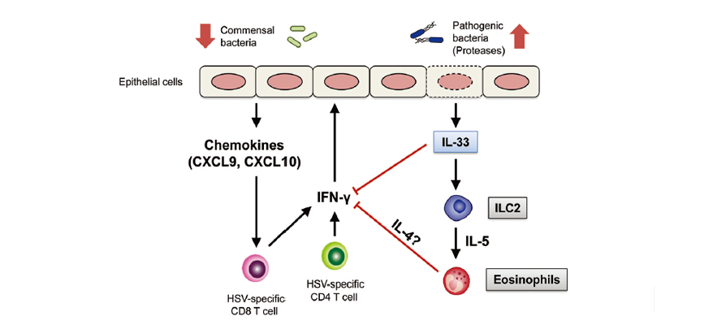

연구성과 10선
연구성과 10선
KAIST RESEARCH ACHIEVEMENTS
항생제에 의한 체내 공생미생물의
불균형이 헤르페스 바이러스
방어에 미치는 영향
의과학대학원 이흥규
요약
체내공생미생물이 어떻게 면역을 조절하여 바이러스 감염에 대하여 방어 기전을 유도하는지에 대하여 잘 알려지지 않았다. 특히, 공생미생물이 바이러스 감염시 방어에 중요한 후천성 면역 조절 기전에 대해서는 알려진 것이 전무하여 본 연구가 시작 되었다. 항생제에 의하여 체내 공생미생물의 불균형이 생겼을 때 질내 헤르페스 바이러스 감염에 대해 매우 취약해지는 것을 발견하였다. 항생제에 의해 질점막내의 공생미생물의 불균형이 유도되고 새롭게 생긴 기회 감염 미생물에 의해서 질상피세포에 의하여 IL-33 사이토카인이 대량으로 분비되어서 바이러스 감염을 억제하기 위해 감염 부위로 몰려오는 작용 T세포의 이동 및 IFN-γ의 분비를 억제하는 것을 발견하였다. 따라서 본 연구는 공생 미생물에 의해서 헤르페스 바이러스 감염에 대해 면역이 조절되는 알려지지 않은 새로운 기전을 규명하였다.
연구배경
체내에는 우리 몸을 구성하는 세포보다 10배 이상 많은 수의 공생 미생물이 존재한다. 공생미생물은 주로 우리 몸과 외부 환경이 접촉하는 피부, 입, 코, 장, 호흡기 및 여성생식기와 같은 장벽 (Barrier)에 존재한다. 공생미생물은 우리 몸의 건강을 유지하는데 중요한 역할을 수행하는데, 체내에서 합성 되지 않는 비타민을 만들어내고, 음식물의 소화를 도와 에너지원을 제공하고, 다양한 면역시스템을 자극하여 적절한 면역시스템이 갖춰지도록 하고, 해로운 미생물의 침입을 막는 등 다양한 역할을 수행하고 있다. 최근 공생미생물의 불균형이 다양한 질환의 발병에 기여한다는 것이 알려지고 있다. 이는 염증성 장질환(크론병 등)과 같이 공생미생물이 가장 많이 존재하는 장의 질환 뿐만 아니라, 알레르기, 천식, 비만, 당뇨 및 종양과 같은 전신질환과도 깊은 연관성이 있음이 알려짐으로써 공생미생물 연구에 대한 관심이 높아지고 있는 실정이다.
그러나, 지금까지의 연구는 질환과 공생미생물간의 상관관계만을 밝힌 것이 대부분이며, 어떠한 기전으로 공생 미생물이 질환을 유발했는지에 대해서는 잘 알지 못하는 상태이다. 또한 공생 미생물이 가장 많이 존재하고 있는 장내에서의 공생미생물의 역할에 대한 연구는 활발히 진행되고 있으나, 그밖에 다른 기관에서의 공생미생물의 역할에 대해서는 잘 알려져 있지 않은 실정이다. 본 연구는 질내 공생미생물 이 헤르페스 바이러스 감염에 끼치는 영향에 대해 연구하였는데, 헤르페스 바이러스는 성매개 바이러스 감염 (Sexually transmitted viral infection) 중 가장 흔한 원인일 뿐만 아니라, HIV-1 (Human Immunodeficiency Virus-1)과 같은 치명적인 바이러스의 감염률을 높인다는 것이 알려져 있다. 또한 헤르페스 바이러스는 체내 신경절에 잠복하고 있다가 스트레스, 강한 자외선 노출 및 월경 등에 의해 반복적으로 재발하고, 임산부가 감염되었을 경우 태아의 중추신경계 감염 등을 초래할 수 있는 질환이지만, 이 바이러스 감염을 완전히 치료할 수 있는 방법은 아직까지 존재하지 않기에 더욱 연구가 필요한 상황이다.
연구내용
본 연구는 여성생식기에서 공생미생물의 불균형이 헤르페스 바이러스 감염에 대한 방어능력을 현저히 약화시키며, 그 기전이 무엇인지를 규명하였다. 경구로 항생제를 투여한 경우, 마우스의 질내 공생미생물의 불균형이 초래되어 유익한 미생물이 감소하고, 정상적으로는 존재할 수 없던 해로운 미생물이 증가하는 것이 관찰되었다. 이러한 마우스에 질점막을 통해 헤르페스 바이러스를 감염시켰을 때, 마우스는 심한 병리학적 소견을 보이면서, 항생제를 투여하지 않은 대조군에 비해 훨씬 빠르게 죽는 것이 관찰되었다. 흥미롭게도 항생제를 투여한 마우스의 질에서 IL-33 이라는 사이토카인이 대량생산되는 것이 관찰되었는데, 이 IL-33이 CD4 또는 CD8 T 세포가 감염 부위로 이동되는 것을 억제하여 항바이러스 면역에 핵심적인 역할을 하는 인터페론 감마(IFN-γ)가 감염부위에서 적절하게 생산되지 못하도록 한다는 것을 세계 최초로 밝히게 되었다(그림). 또한, 본 연구팀은 항생제 투여로 인해 증가한 해로운 미생물이 질내에서 단백질 분해효소를 분비하여 이로 인해 유발된 질 상피세포의 손상이 IL-33의 분비를 촉진시켰을 가능성을 제시하였다.플레밍에 의해 최초로 페니실린이 발견된 이후 오늘날에는 다양한 항생제를 이용하여 수많은 감염병을 치료할 수 있게 되었다. 그러나, 꼭 항생제를 사용하지 않아도 되는 경우에 조차 항생제가 남용되면서 항생제 내성균이 등장하고, 우리 몸에 상재하는 유익한 미생물을 죽임으로써 새로운 다양한 질환을 유발하게 되었다. 본 연구는 항생제 남용으로 인한 공생미생물의 불균형이 바이러스 감염에 대한 방어능력을 약화시키는 기작을 밝힘으로써, 항생제의 남용에 대한 경각심을 일깨울 수 있을 것이라 기대된다. 또한 역으로 체내 공생미생물을 우리 몸에 유익하도록 조절함으로써 방어능력이 향상된 바이러스 백신 개발에 기여할 수 있을 것으로 기대된다.
 항생제에 의한 질내 미생물 불균형시 항헤르페스 바이러스 면역방어 기전 모델
우수성과 및 기대효과
- 참고 자료 논문에 대하여 국내외 언론보도 16여 회
- Highlighted in “In This Issue” section of PNAS 2016 Feb 9.
- 항생제 남용이 초래하는 공생미생물의 불균형이 바이러스 감염에 대한 방어능력 저하를 증명함. 항생제 남용에 대한 위험성 인식확대 기대
- 공생미생물 불균형에 의해 질 점막에서 분비되는 IL-33 과 같은 물질이 감염에 대한 방어능력 평가지표로 활용가능
- 체내 공생미생물을 우리 몸에 유익하도록 조절함으로써 방어능력이 향상된바이러스 치료제 및 백신개발 기여
연구성과
[논문1] Oh JE, Kim B, Chang DH, Kwon M, Lee SY, Kang D, Kim JY, Hwang I, Yu JW, Nakae N, Lee HK. Dysbiosis-induced IL-33 contributes to impaired antiviral immunity in the genital mucosa. Proc. Natl. Acad. Sci. U.S.A. 2016 Feb 9;113(6):E762-71
[논문2] Oh JE, Lee MS, Kim YJ, Lee HK. OASL1 deficiency promotes antiviral protection against genital herpes simplex virus type 2 infection by enhancing type I interferon production. Scientific Reports 2016 Jan. 11.